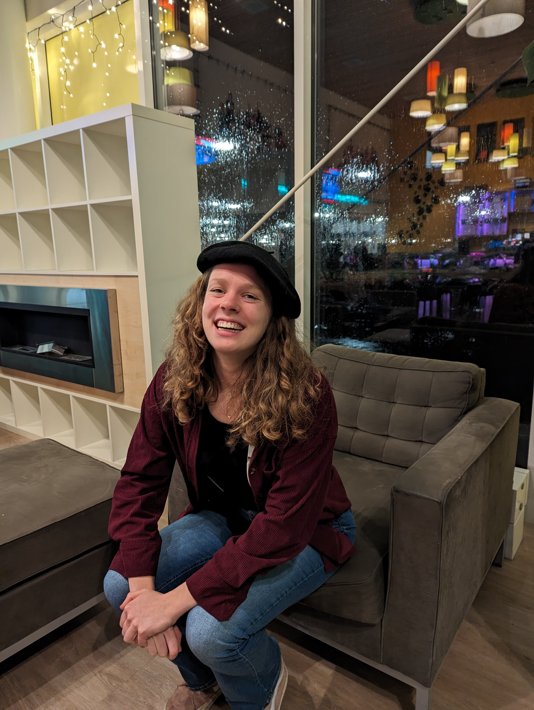
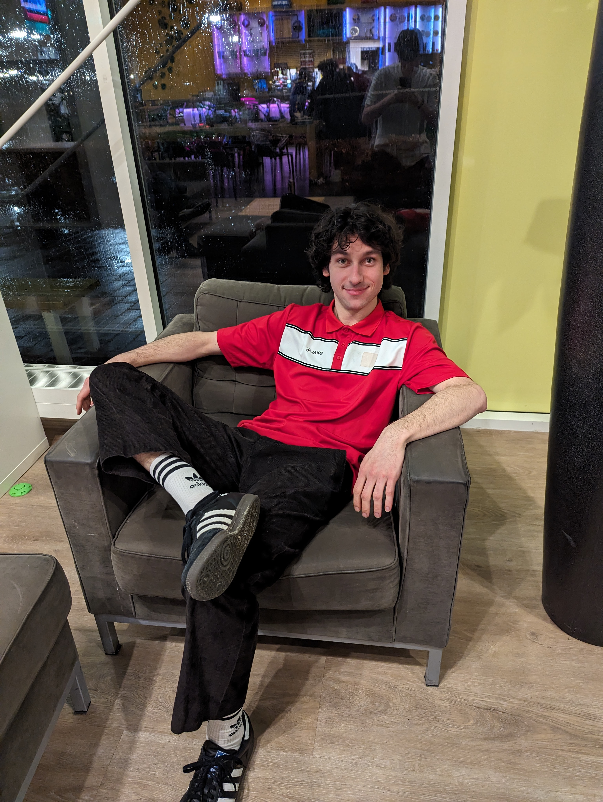

About Us
Our journey as organizers of the Dutch Juggling Festival (NJF) 2024 began at Youth Circus Diedom, where four of us met for the first time. This initial meeting laid the foundation for a close friendship, marked by shared adventures and visiting numerous festivals. Inspired by these experiences and our shared passion for juggling, the idea to organize our own festival came to life. We found our fifth member at one of these festivals and decided to take them under our wing.
We look forward to welcoming you at NJF 2024.
Mia
Hi I'm Mia, 21 years old and the proud president of the Dutch Juggling Festival 2024! Together with Maud, I ensure the most epic shows at the NJF. Last year I was in the spotlight twice, which was really fun :) This year I hope to give the performers an equally amazing experience. Start applauding now, because the gala show is going to be unforgettable

Jochem
Hello! I'm Jochem, 26 years old and this year I am the treasurer of the NJF. This means that I make sure all things related to money are taken care of so we can have an unforgettable convention. And an unforgettable convention can ofcourse only be even better with really good food. As the head of catering, I make sure that is all in order. I am looking forward to the convention! You too? :)

Maud
Hi there!! I'm Maud, 21 years old, and the secretary of the NJF 2024! Every fun, funny, serious, or important email comes to me, and I make sure those emails are forwarded to the right people, or I answer them myself :) In addition, Mia and I are working together to create an awesome gala show this year: you definitely don't want to miss it!! I'm really excited and hope to see all of you from May 9th till 12th!!
Florian
Hello my lovely jugglers! I’m Florian, 24 years old and live in Amsterdam (it’s possible). I have attended NJFs since 2011 and it was about time I organise one myself. I am currently ‘in between jobs’ which leaves enough room to build the NJF website, apply for subsidies and try to find sponsor deals. My favourite NJF moment was in Purmerend 2019 when there was a spontaneous renegade outside that continued until dawn. I just lost the game! Bye bye
Jeroen
Hi, I'm Jeroen (24). In 2018, I was already the night mayor of the NJF, but in 2024, I'm kicking it up a notch! This time, I'll perfectly balance your night's rest with a perfect campsite, while night owls can look forward to my epic parties. Sleep tight or party hard, I've got you covered!